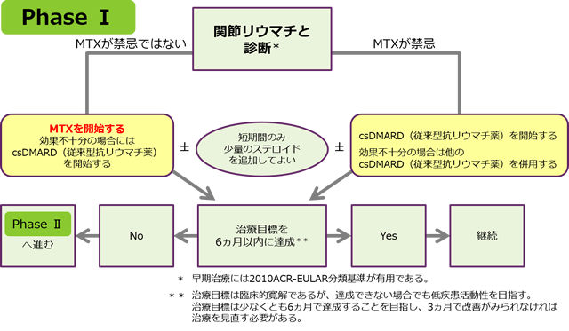

メトトレキサートはRAと診断された際の第一選択薬としてガイドラインで推奨されているが、副作用のマネジメントが困難
関節リウマチ診療ガイドライン2014治療アルゴリズム

MTXはアンカードラッグとして、RAの第一選択薬として推奨されているが、骨髄抑制・間質性肺炎・MTX-LPD等の重篤な副作用や、吐気・口内炎・湿疹など患者さんのQOLを低下させる副作用が問題になっている
関節リウマチ診療ガイドライン2014治療アルゴリズム
MTXはアンカードラッグとして、RAの第一選択薬として推奨されているが、骨髄抑制・間質性肺炎・MTX-LPD等の重篤な副作用や、吐気・口内炎・湿疹など患者さんのQOLを低下させる副作用が問題になっている